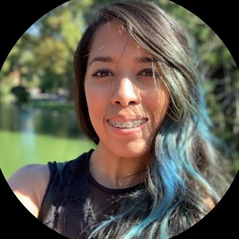

Desarrolladora Frontend y WordPress con experiencia implementando diseños desde Figma hasta sitios web funcionales y responsivos con WordPress y Elementor. Sólida base en HTML, CSS y JavaScript, con enfoque en experiencia de usuario, accesibilidad y SEO. En Remesworld pasé de desarrolladora frontend a Project Manager, liderando roadmap y equipo; recientemente realicé una pasantía en Kromee creando sitios WordPress a partir de diseños en Figma. Ingeniera en Sistemas por UMOV y graduada del bootcamp Full-Stack de 4Geeks Academy.
Implementación de sitios web responsivos en WordPress a partir de diseños en Figma: maquetación con Elementor asegurando fidelidad visual, configuración de plugins y componentes, y colaboración con el equipo de diseño en ajustes finales.
Definición de roadmap de producto y priorización de funcionalidades junto a los dueños del producto; supervisión de un equipo de 3 diseñadores y 2 desarrolladores backend, y alineación entre negocio y desarrollo.
Desarrollo de interfaces con React, JavaScript, HTML y CSS para la plataforma de remesas: mejora de UX y navegación, integración de Mailchimp para notificaciones a clientes, y trabajo bajo metodología Scrum.
Desarrollo de sitios web orientados a conversión: estética y usabilidad con CSS y diseño, implementación de plugins y técnicas de SEO, en colaboración con el equipo de marketing.
Sistema de autenticación de usuarios con backend en Python/Flask y frontend en React: registro, login y rutas protegidas con JWT.
Proyecto final del bootcamp 4Geeks, desarrollado en equipo: aplicación que recomienda películas según preferencias (solo, en pareja o con amigos; género), con registro y login de usuarios, favoritos y calificaciones. Construida con React, JavaScript, Python, JWT y SQLAlchemy.
API REST en Python con Flask: modelado de datos, endpoints y respuestas JSON para personajes, planetas y favoritos.
Blog interactivo en React que consume la API de Star Wars (SWAPI): listados, detalle por elemento y favoritos con manejo de estado.
Aplicación CRUD de contactos en React con Context y Flux: crear, editar y eliminar contactos contra una API.
Gestor de tareas en Python (2026): práctica continua de backend, estructura de proyecto y control de versiones.
UMOV Academy · 2023 — 2025
4Geeks Academy · 2024
Acámica · 2019 — 2020
IUTA · 2014 — 2017
Español — Nativo · Inglés — Básico (A1)
¿Tienes un proyecto o una vacante? Escríbeme: